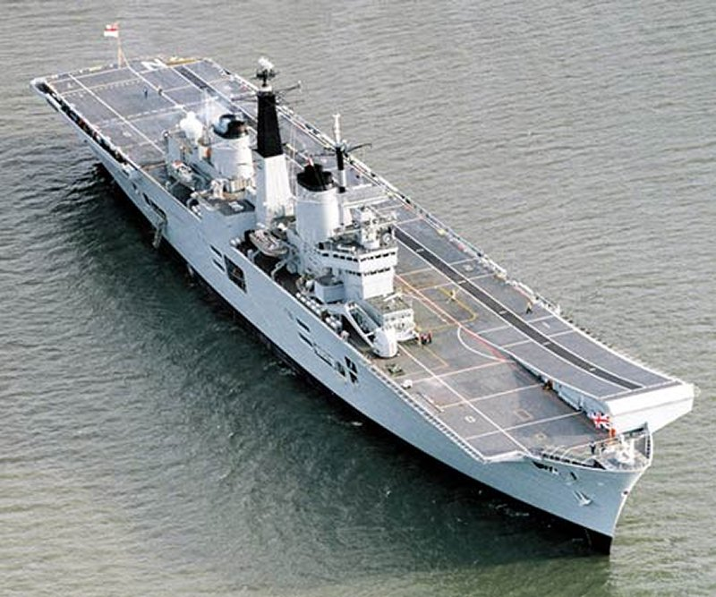

|
|
|

|
HMS Illustrious, R06, Aircraft Carrier
 Introduction and What's in the Box - May 3, 2013
Overview - The Royal Navy's Invincible Class Aircraft Carriers:
Displacement: 23,000 tons The Invincible class carriers were initially dubbed "through deck cruisers" for political and funding purposes, and were the first successful VSTOL carriers in the world, employing the British Harrier aircraft. Nonetheless, after approval and commencment of work, they were threatened with cancellation and being sold off by politicians at the time who felt the UK no longer required the services of aircraft carriers. However, miltary planners garnered enough support to see the the development, launching and commissioning of the intial vessel, HMS Invincble, and were about to commision the second, HMS Illustrious in early 1982. This proved to be very critical to the UK because of the outbreak of the 1982 Falklands War with Argentina. Agrentina invaded and took the Falkland Islands and the UK was forced to respond. The Royal Navy dispatched a large task force with two aircraft carriers, one the HMS Hermes (later sold to India to become the INS Viraat), and the other the newly completed HMS Invincible. By May of that year (1982) the task force had accomplished two of its initial tasks; the movement of the troops safely to the South Atlantic and the establishment of control of the seas around the Islands. The role of the VSTOL carriers then became crucial through the remiander of the conflict, providing air defence and the means of attacking enemy ships and ground positions, while their helicopters provided constant anti-submarine protection, support and resupply of the troops ashore. The Invincible and her air wing performed well, despite some losses to both aircraft and supporting ships to Argentine air attack, and the islands were recaptured and the Argentine forces defeated. At that time, the second carrier, HMS Illustrious, which had been rushed throught trials, relieved the HMS Invincible and Hermes in the area, and the effectiveness and the need for these vessels was firmly established. The carriers were originally designed without the now characteristic ski ramp. However, during operational tests it was discovered that using the ski ramp provided the Sea Harrier with much better performance, allowing it to carry more fuel and weapons, making it a far more versatile aircraft for fleet defense, attack at sea, and ground support missions. The upgrade to the F/A 2 Sea Harrier was a great success for the fighter, and allowed it to do its job very capably in many different operations around the world, including its combat roles in the South Attlantic and the Mid-East. The Harriers were retired in 2010, and will be replaced by the Joint Strike Fighter for use in the Royal Navy Fleet Air Arm on the new, full-deck HMS Queren Elizabeth class aircraft carriers. In that regard, by June of 2011, all but one of the Invincible class carriers had been decommissioned and disposed of to make way for the two new, full deck, conventional carriers the United Kingdom is now building. These carriers served their nation and it's interests very capably for over thirty years. This leaves only the HMS Illustrious active, which now fills a helicopter aircraft carrier role, which it will continue to fulfill until the first new carrier, the HMS Queen Elizabeth is launched..
Introduction - HMS Illustrious, R06:
She was laid down on October 7, 1976, launched on December 14, 1978, and was provisonally commissioned on June 20, 1982. Her commissioning was three months early and was rushed into effect because of the Falklands War of 1982 with Argentina over the Flaklands Isnads which the Argentines had occupied and which the United Kingdom sailed to take back. Illustious'sister ship, the HMS Invincible, R05, had been sent with the task force to the southern Atlanitc Ocean to implement that strategy, and for which the Illustrious would stand as a back-up and replacement if the Illustrious were damaged, or as a relief durong or at the end of the war.
During the remainder of the 1980s, Illustrious received several enhancements during refits, including a steeper ski-jump to enable the Harriers in the air wing to take-off with a larger payload. During one Extended Defect and Maintenance Period, numerous modifications were made to the ship including the removal of her Sea Dart missile defences at a cost of twelve million pounds. This allowed for extra deck space that enables her to carry more aircraft (increased to 22), including the Harrier GR7.
In 1986 she suffered a catastrophic gearbox failure which almost ended her naval career. POn the night of her beginning a "fly the flag" around the globe trip, at about 23:30 that evening, while powering up to full engine revs, the oil vapour surrounding the gearbox exploded causing a fire that was not put out for over four hours. At one point the captain made preparations to abandon ship, but he was overruled by the fleet admiral at the time who believed the ship could be saved. There was no loss of life or serious injury, but the trip was put off for several months while the ship was taken out of service for repairs.
During the 1990s, the main task of the aircraft carriers of the Royal Navy, including the HMS Illustrious, was helping maintain the no-fly zone over Bosnia during the Bosnian conflict. All three of the Invincible carriers rotated through the area. During that time she also served in the 1st Iraq war, Opertion Desert Storm. In 1998 she operated in the Persian Gulf in support of Operation Southern Watch, which was the enforcement of the no-fly-zone over Southern Iraq.
In 2000 Illustrious led Task Group 342.1, a naval task force comprising HMS Ocean, Argyll, Iron Duke, and Chatham along with numerous RFA ships in Operation Palliser, which was aimed at restoring peace and stability to Sierra Leone. Then, in September 2001, a large British exercise, Saif Sareea II, was taking place in Oman of which the HMS Illustrious was a part. During the exercise, on September 11, 2001, the United States was attacked and the World Trade Center destroyed by Al-Qaeda. Illustrious and her escorts remained in theatre while other elements of the task force returned home. Illustrious had Royal Marines on board, ready for any possible combat operations in Afghanistan. However, before she left, no deployment was made and she was relieved by Ocean in early 2002 and returned to Portsmouth after seven months at sea.
In mid-2003, the ship underwent a large refit at Rosyth Dockyard. This refit involved the total rebuild of the ski jump, the adding of better communications sensors and equipment, and reconfiguring the ship to enable it to more quickly switch between the light aircraft carrier and helicopter carrier roles. It proved to be a fortuitous move as shall be shown. The refit lasted for months and precluded the Illustrious involvement in Operation Iraqi Freedom, the 2nd Iraq War which began in 2003..
In 2006, Illustrious along with HMS Gloucester helped in the evacuation of British citizens from Beirut as a result of the 2006 Israel-Lebanon war. Then, in January 2008, Illustrious set sail from Portsmouth as head of the multi-national Task Group 328.01, Operation Orion 08, which carried out exercises and diplomatic visits to twenty ports in the Mediterranean, Africa, the Middle East, and south-east Asia from January until May 2008 .
Throughout this time an up until 2010, her airwing of Harriers served as an effective instrument of The UKs national interest and power projection capabilities. As part of Strategic Defence and Security Review, the Harriers were all retired in 2010, along with Illustrious' sister ship, the Ark Royal. In addition, at that time, it was announced that Illustrious would be transformed into a purely helicopter aircraft carrier. In May 2011 Illustrious was made operational after a £40 million refit, and she was handed back to the fleet after sea trials in late July 2011. She took over the helicopter carrier role for HMS Ocean while the Ocean undergoes a amjor refit herself, due for completion by 2014.
In March 2012, Illustrious took part in Exercise 'Cold Response' with HMS Bulwark, RFA Mounts Bay and other Royal Navy vessels. This was a NATO winter war game exercise conducted in northern Norway, where she showed her capabilities as a helicopter carrier The Illustrious was awarded the Bambara Trophy, the trophy is given to a unit each year with the best flight safety record, during Cold Response.
Illustrious is currently the oldest ship in the Royal Navy's active fleet and she will be withdrawn from service and will be replaced by the new, large 65,000 ton HMS Queen Elizabeth aircraft carrier after she is launched in 2014. The UK Ministry of Defence has announced that Illustrious, as the last of the Invincible-class aircraft carriers, will be preserved as a memorial to the nation, "in recognition of the service given by these ships in protecting the UK over the last 30 years.".
What's in the Box:
Inside the box, you find five large spures of plastic injection molded parts molded in grey. These five sprues contain over 270 parts. I purchased an additional aircraft set, making well over 300 parts in total for my build. In addition there is a very fuldecal sheet, and two booklets. The 26 page instruction booklet, and a 20 page, full color informational booklet about the Illustrious itself which is very nice and makes for a good read.
The decal sheets consists of over 100 decals, which are very extensive, and look to be high quality water-slide decals which will add significantly to the completed model. The parts appear well modled with little or no flash, and few seams. The landing deck is a single piece, and the above waterline hull comes in two pieces, with a mid-deck piece for the deck housing the hanger and other areas of the ship.
You can build a water-line version of the vessel, and the lower section is contained in a single large piece as well. Dry fitting shows these pieces to fit relatively well together. (More on that during the build). Here's how the kit looks out of the box:
The kit has a very nice, full color painting scheme (as shown) showing the colors in several views along with paint manufacturers part numbers for those colors. The instruction are quite lengthy given the total part count, but they are very logically laid out and look intuitive to follow. As a result, the instructions are very detailed and very exacting for the building of the ship. It consists of 26 pages of instructions laid out in 110 steps that cover all options and contigencies.
I am seriously considering adding a lighting system to the hanger bay, even though there are no deck-edge elevators through which to see it. Just the elevators on deck. I may cut some passage ways into the hanger deck from some of the sponsons and openings around the vessel, if I can research and find where such openings may actually exist.
Here are the instructions and the information booklet pages:
This looks like it is going to be a really fun build. I have been looking forward to it for some time, and intend to build the model in its latest configuration, but retaining the Sea Harrier aircraft...and, if I can find some 1/350 scale examples of them, perhaps even placing some UK JSF aircraft for the Royal NAvy being tested or embarked aboard her as well.
Tally Ho!
Alright, it's been a good ten days since my last update and between taking grandkids to movies, yard work, and other activites, I have not been able to make as much progress as I would like on the Illustrious build, but I have progressed somewhat nonetheless and I thought I ought to go ahead and document that.
1st, I have ordered White Ensign Model's (WEM) photo etch detail kit for this model. It contains a lot of photo etch parts for all of the railing, sensors, hanger bay items, and for the aircraft. I am looking forward getting it (hopefully this week) and it will hold me up on completing the hanger deck (as we shall discuss here in a minute) until it gets here.
I started working on the model by painting the main carrier deck (and I chose Model MAsters Nuetral Gray) and adding the detail for the side panel (all vertical panels will be Model Master Light Gray) where the ski jump angles up at the bow. I also did the basic construction of the island, including the main structure, the funnels, and the bridge area. On the bridge, there is actually a deck so I went ahead and added a number of personnel in there that can be seen through the windows.
I then started working on the hanger deck and made a decision to add lighting to this deck. Now, there are only two elevators, and both of them are in the middile of the deck and not deck edge, so they are totally enclosed. I intend to have the forward one positioned up for take off air operations, and the rear one in the completely down position, with either a helo or a Harrier on it. This would hide the vast majority of the nice detail that could be added to the hanger with the model built and delivered as it is. However, there are numerous inset decks all along the port and starboard side of the vessel with doors and hatchways that would lead to the hanger spaces, and on the fantail, a corridor that leads there as well (which is not included in any options for the model as built by Airfix).
So, I decided to cut numerous openings along either side and leave some of them completely "opened" into the hanger spaces so that with the lights on, you will be able to see in there. This neccessitated using my Xacto Knife, Dremel tools, files, sand paper, etc to make these openings. I believe it is going to produce a very nice effect when they are all detailed and set up with the lighting, and will allow me to put some good effort into detailing the hanger.
As you can see, I have openings in three places along each side, and have cut corresponding openings in the proper locations into the hanger enclosures. I also have created the opening in the enclosrue to the fantail and painted a corridor that I will add walls and a ceiling to back to the aft end of the hanger which you will be able to see through the openings in the fantail.
Nice.
Now, I will continue with some of the detail work I can do for the various decks along the port and starboard sides (ships boats, davits, etc) and begin building the aircraft and equipment I inted to put in the hanger. In addition, there is quite a bit of work I can do on the island before I get the PE parts.
Once my PE set from WEM comes in, I will detail the actual hanger enclosure with its railing and other equipment and then put all of that together, and then detail the island.
Hopefully a good portion (or perhaps all) of that will be done with my next entry. Then, I will do all the elctrical work for the lighting system, devising how I want to run those wires so they will fit into the construction of the ship, and probably then be terminated in the stand with an "on/off" switch. it will be a 9v dc system.
At that point I can actually start thinking about putting the hull together and getting it attached to these two decks I am completing.
Last week I got my White Ensign Models (WEM) Photo Etch (PE) detail kit in for the Illustrious. I found a real good deal on it on L'Arsenal web site out of France and ordered it. Still, that kit cost me more than the model itself, though I did get a fantastic "sale" on the model about 9 months or more ago for $52.00. Anyhow, the kit is extensive and included not only the parts for the ship, but also for the air wing. I will make the most use of the parts for the vessel. Something like 200 Photo Etch parts for the ship covering every sensor, railing, platform, yard arm, ladders, etc. on the vessel. As usual, also excellent documentation and instructions from WEM.
With the PE kit in, I will be prepared to start the detail work on the island and the hanger bay. First I needed to complete the plastic detail work on the island. This involves a multitude of sensors, radar domes, platforms, weapons, CCTV cameras, and lights on the island. The island itself is a fairly detailed model. Here are pics of where I started this session with the island and then a number of pictures showing the progress on the island through to completion of the plastic detail for the island itself:
This is looking very good. The 30mm Goal Keeper CIWS and the 25mm atuo cannon and their sponsons will look very nice with the handrailing around them. There is significant work involved for the PE parts for the island, which I will work on for the next session. Then, either in conjunction with that step, or as part of the next one (probably the latter) I will do the detail work in the hanger bay, including the hanger bay aircraft I intend to place in there which will consist of 4 Harriers and at least two helos.
This session I focused on photo etch details for the island. I wanted to get further along, but with the Memorial Day weekend, taking grandkids to the movie on Saturday (we saw Epic and thoroughly enjoyed it), and helping my ten year old grandson, Riley, with his 1/700 scale USS Ronald Reagan on memorial Day, my own activities necessarily took a back set. Nonethe less, I was able to get most of the photo etching done on the Siland. I started with the main radar, the D band, 1022 air search radar. This was a realtively involved process. Ypu see here three parts, but two of those parts are already made up of multiple parts which have been approriately bent and then glued together.
Then it was onto the Yard Amrs and fittings for the forward mast. These are rather delicate Photo etch pats that involve quite a bit of careful handling to ensure that they stay straight. They are fit onto the forward mast just below the small radar platform for the forward two, which are canted forward at 45 degrees, and then below that the aft facing pair of yard arms, canted towards the rear at 45 degrees. Each has a support structure that comes off of the main mast below it to support it as shown.
Finally, it was finishing off most of the railing and safety netting for the various decks and stations. This included the 30mm Goal Keepr CIWS station, the 25mm autocannon gun station, and the ladders and railings for the main mast, along with numerous other railings for the various decks on the island.
I stil have a few railing to place on the island but should finish that up in fairly fast order. Then it will be onto completing the hagner bay structure and phpoto etch railings, and then rigging the lighting system wiring for the hanger bay. I hope to complete both of those two functions in the next session.
I had hoped to get into the details and lighting on the hanger deck during this last week, but the remaining Photo Etch details on the Island were just too time consuming and so I didn't get to it. However, I did complete the island. Altogether there were over 90 Photo Etch parts for the Island alone. I had quite a bit of small railing to complete and then all of the yard arms for the funnels. With the plastic parts comprising the island, you are looking at well over 150 parts for the island alone. Quite a detailed model assembly in its own right.
Anyhow, with all the detailing, here's how the island now looks, ready to be added to the carrier flight deck when the time is right.
And here's a picture of the overall Island:
Well, quite a bit of time has gone by. I got side tracked into a couple of projects, one a 1/22 Peterbuilt conventional tractor build with one of my grandsons for my father-in-law, my grandkids great granfather who retired from trucking after over 55 years at 80 years old. The other another build with another grandson of a 1/700 scale USS Regan CVN-76 aircraft carrier. But now it's back to my HMS Illustrious, R-06. Back to working in the hanger spaces. I got all of the PE handrailing in for the hanger deck walls, and then put those walls together, matching the entry ways I had cut into the sides of those walls with the various auxillary decks along the side of the hull so you could look into the hanger deck when completed. Also preparing for the hanger deck lighting system (which will come next).
Well, quite a bit of time has gone by. I got side tracked into a couple of projects, one a 1/22 Peterbuilt conventional tractor build with one of my grandsons for my father-in-law, my grandkids great granfather who retired from trucking after over 55 years at 80 years old. The other another build with another grandson of a 1/700 scale USS Regan CVN-76 aircraft carrier. But now it's back to my HMS Illustrious, R-06. Back to working in the hanger spaces. I got all of the PE handrailing in for the hanger deck walls, and then put those walls together, matching the entry ways I had cut into the sides of those walls with the various auxillary decks along the side of the hull so you could look into the hanger deck when completed. Also preparing for the hanger deck lighting system (which will come next).
Then it was on to painting and building the aircraft I intend to have being serviced in the hanger deck area. I will have two Harriers, a Merlin ASW helicopter, and a Sea King AEW helicopter in the hanger deck. So I painted those while on their sprues, using Light Ghoast gray for the body of the aircraft and then weathered black for the windows and flat black for the wheels. I then placed these on the hanger deck, one of the Harriers being on the lowered aft lift, preparing to be lifted to the flight deck. I will add some more details (various equipment and personnel) after the lighting system is complete and before buttoning up the hanger deck.
So, that's it for this session. In the next session, within the week, I hope to have the lighting system completed, tested and installed (and I am using Modeler's Brand parts for this, just as I did on my USS Enterprise). Also, I want to have the hanger deck finished and the upper hull put together with the hanger deck attached so I can button up the hanger deck and place the flight deck over it.
Ok, since I had been working on the aircraft for the hanger deck, I decided beofre I changed gears to just go ahead and build the entire airwing I intend to display on the Illustrious. This will consist of the following:
4 x Sea Harrier FA.2s (3 on deck, 1 in hanger)
Once these were completed (and I still need to scratch build the side mounted AEW radome for the Sea Kings and then add all of the decals), I then gathered my material for putting together the lighting system I intend to have on the Illustrious hanger deck. The parts to do that include the following (none of which are included with the kit):
- 3 Modeler's Brand (http://www.modelersbrand.com/) regular, double-density, warm white lighting strips with 3 LEDs each
I bought the Modelr's Brand (http://www.modelersbrand.com/) regular, double density, warm white lighting strips/tape, the 9 VDC, the Solderless leads, and the switch from Modeler's brand. I purchased the 9 V DC battery, the wire, the tie downs, the tape-on attach points, the terminal block, and the connectors at a local hardware store (True Value). I then use the parts I have purchased for several lighting systems. This bunch also let me build the lighting system on my 1/350 scale USS Enterprise, CVN-65 by Tamiya, and will allow me to build the lighting system on my upcoming 1/350 scale JMSDF, DDH-181 Hyuga by Fujimi, in addition to this one for the Illustrious.
I then built the wiring. I attached the solderless leads to each of the three lighting strips ensuring proper polarity (postive-negative). Normally, on these lighting strips, the side with the little "R" is the positive side. But, it is always good to test the polarity before you finalize. I found that two of my lighting strips or solderless leads (it did not really matter to me which it was) had their polarity reversed and therefore I had to account for this in the wiring. I simply reversed the solderless leads from the lighting strip on those two, and then switched everything over to proper coloring with my red (positive) white (negative) wiring after they were joined.
Once the leads had been attached and each individually tested. I then began adding the wiring that leads along the ceiling of the hanger deck, into the body of the vessel, and ultimately through the bottom of the vessel and into the stand where I will place the 9 vdc battery (power source) and switch.
The pictures show the wiring, which is on the ceiling of the hanger deck, so you are seeing it turned over. Since the only view into the hanger deck is through the aft elevator, the several side passageways, and the rear passageway I cut into the model and scrtach built, this wiring will not be visible. I cut a slot in the forward, starboard end of the hanger deck structure, up near the ceiling, to allow these wires to route out to the interior spaces of the ship, which I will later route out through the bottom of the hull, to the switch in the model stand.
Once the wiring was completed, and each section successively tested and working, I tied every thing down, tidied it up, and then performed a final lighting test, as shown below.
Nice.
So, the hanger deck, its aircraft, and the lighting system are now completed. Tonight and tomorrow (Saturday, July 6th) I hope to build the two sides of the upper hull with the hanger deck installed, and then place the flight deck on top of the hanger deck. With my island already completed, I can then move rapidly to adding the many kit included and PE details on the hull and flight deck.
Ok, now I am getting to a really nice place with this build. Where it all starts coming together and looking like the 1/350 scale model of the Invincible Class aircraft carrier it is. Before I moved on to the actual hull however, I had to add a few decals to the haner deck and a few more details. This consisted mainly of the decals for the one elevator that I am showing lowered, a few more fire station and hanger details I wanted to add before closing it up, and the davits and ship's boats to be added into the small auxillary decks shown along the outside of the hanger deck on either side, including the "roofs" for each of those decks. All of these are important because they must line up properly with the hull sides when they ar glued together.
Then it was on to actually attaching the completed hanger deck assmbly to the upper hull. The Airfix model has the upper hull in two halves, one for each side for the entire length of the hull. It was a little more difficult than anticpated to line these parts up and attach them to the hanger deck along its length. Some adjustments in the roofs and sides of the auxillary decks weree necessary. In addition, the fit was not as tight (these long hull parts tend to not hold their shape too well in terms of the curvature), so utilizing clamps, rubber bands, and just holding them in place by hand until the initial bond was acheived were all necessary. In addition, I had to glue some stiffiners and other attachment pieces in place on the inside ot the vessel along these hull joint and attachment areas to ensure a good bond for the long term.
At this point, while that was drying, I took the time to add all of the parts to the lower hull. The shafts, the rudders, the sonar-dome, the supports and stabilizors. They all turned out pretty good and in my next build I will paint the lower hull, the warter line mark, and add this to the upper
hull.
Once the upper hull assembly had all dried in their proper places, it was then time to add the aft section of the hull across the aft space between the port and starboard upper hulls...by the fantail. This piece was difficult to fit properly. It too required clamps, holding in place, and stiffiners. In addition, once it dried, use of the Dremmel tool was required to get a satifcatory fit and seam lines.
Finally, it was time to glue the actual flight deck in place. Again, this was a more difficult task than antipated. Because of some of the cuuravature issues with the upper huill halves, the fit was not as tight or exact as desired. Once again, a lot of clamping, rubber bands, holding things in place, and then use of files and the dremmel tool wee required to get things to fit as desired. Even then, towardss the ski-jump, putty will be required to fill some seams.
Finally, once that was all dried, I had a completed main upper hull with the hanger deck and the flight deck. I will still have to place a lot of gangways, sponsons, and other details along the hull on either side, inluding the main launches and the crain, but the principle part is complete. So, it was time to place the decals on the flight deck. I had been looking forward to this because Airfix supplies such a rich decal set for the Illustrious flight deck. There are a LOT of decals, providing a very accurate representation of the flight deck markings. Upwards of sixty or more decals are required to get all of the take-off, landing positions, parking positions, and other markings in place. I took it in three parts. The bow area, the middle section, and the aft section. In order to let them dry properly and then move on to the next section, it was literally an all day affair, and into the night...actually until about midnight.
That is looking pretty good. Since the Island is already complete, I decided to do a dry fit of the island on the deck, and I have to say, it's starting to all come together. Also did several tests of the lighting system throughout this entire period, and it is working like a charm.
In my next installment, I hope to get the lower hull painted, the water line mark painted, and the lower hull added to the upperhull. I will also build the stand and run the lighting wire down into it and place the switch there with the battery. Also hope to add the various walk ways around the flight deck and the equipment, and then glue the island in place.
Okay, I got the lower hull painted, but will show that as I glue it on in the next installement. For this session, I concentrated on the catwalks around the flight deck, the metal grating that goes on them, and then on the numerous life raft stations all along those catwalks to enable massive evacuation abandonment of ship if necessary.
First, the catwalks had to be painted. I pained them the same Model Master RN Light Gray I have been using for the hull and all vertical surfaces, and then followed that up with painting the flat portion, upon which the metal grates will rest, flat gray.
Then, I added the grating. These provided in the White Ensign Model HMS Illustrious photo etch set I am using. But be forewarned, these WEM parts, are made to replace the plastic parts that come in the Airfix kit. I really like the fit of the plastic parts, as well as the lower structural supports shown on them...so I used both. This meant I had to cut off the tabs on the photo etch parts that otherwise would have fit into the hull in place of the tabs on plastic parts. It also meant I had to trim each metal part to allow for it to fit inside the plastic part, on top of the flat plastic surface where the crew personnel walk. I did so, and then applied each part to its respective place. it is more difficult to see in these pictures, but the contrast between the darker underlying surface and the light gray grating looks really good.
Once they had dried up nice and strong over night, it was time to add these parts to the hull, and then add the numerous lift raft stations to them at all of the cut out locations. The life rafts had been previously painted flat white. That all fit very well into the respective locations and are now giving my Illustrious a much more finished look about her.
Okay, that last pic pretty much shows where I am at.
in the next session, I will add the waterline mark on the upper hull, glue the lower hull to the upper hull with a hole in the very bottom for my lighting system wires, and then add some significat detail to the starboard side of the island, along the edge of the vessel. This will include the large crane, the ships launches and their davitss, etc.). Once that step is complete, it will be time to build the deck handling equipment, and then add the airwing to the deck, and that will complete the vessel. Should be some very nice pictures I can make of the overall vessel at that point.
So, I begain adding the final details to the vessel on the auxilliary decks on the port and starboard sides, and on the flight deck around the island. This included the ships launches and their davits, the large crane, the large crane truck, one of the tow trucks, and the various safety nettings still needing to be added.
Then it was on to adding all of the railing around the various auxilliary deck opening on the starboard and hull sides. This was quite time consuming, but the folks at White Ensign Models provided each and every one in their very complete photo etch kit specifically for this model. I then added the waterline mark utilizing my model masking tape. Then it was time to attach the lower hull with the rudders, props and shafts to the upper hull.
This was more difficult than normal for two reasons. 1st, I waited until the end to do it so the upper hull with all of its details, particularly the masts and sensors on the island, had to be situated so I could add the lower hull and place pressure on it to form the bond. I used some extra boxes (which were sturdy) to do this as shown. 2nd, because the fit is rather difficult. This goes back to the Airfix design and tooling for this model where the upper hull is formed from two seperate halves along a very long length where the plastic for each half is relatively thin. It warps easily and I ran into the same troubles I had with putting the upper hull halves together with the hanger deck. But, in the end it got done.
In the mean time I had also painted the stand and let it dry. Once the upper and lower halve hulls were joined and had dry, I place them on the stand. So at this point, the vessel is essentially complete as shown. I went ahead and tested the lighting system again and have a couple of grainy pics showing how that is looking through the elevator and through one of the opening on an auxilliary deck on the port side.
She's looking pretty good. Now I will add the remaining decals to the flight deck aircraft and helicopters and then place the aircaft on deck. Then I will build a box into the stand that will hold my 9 vdc battery and the switch to turn on and off the lighting system for the hanger bay. Finally, with a little touch up, the carrier will be complete and I will take a number of detailed pictures showing her off. I hope to complete this by the weekend on Saturday, July 27th. See you then!
I added the final decals to the airwing, then built a couple of more deck tow vehicles, and then glued the aircraft and deck vehicles to the carrier. I then went around and did touch up work on railings that had been bent, touch up paint, etc. I wired the lighting switch and decided to just run that switch, with electrical tape wrapped wires, out next to the stand and let it be there for operation. Then the model was complete and ready for display.
Here are some closer up pictures showing some of the detail.
And finally, a number of pictures showing off the lighting system on the hanger deck. I really need a better camera to capture the detail thrpough the small passageways, but you can clearly see the aircraft and helos through those openings as they are lit up, and it adds a really good look and feature to this kit. A couple are taken with a flash, the others without the flash and with the lighting in the room turned off, using just the background ambient lighting.
And, at long last, that's it, the completed Airfix 1/350 scale HMS Illustrious, R06.
Now it is on to the Japanese Group that will be set around the Fujimi 1/350 scale Hyuga, DDH-181.
The completion of the PLAN Carrier group, centered on the already completed Trumpeter's 1/350 scale PLA Navy's Aircraft Carrier CV-16, Liaoning, (in addition to the other escorts already completed) included Mini Hobby's's PLAN Guangzhou, DDG-168. I recently pre-ordered a 1/350 scale model of the PLAN Type 071 LPD, Yuzhao Class, announced by Trumpeter and due out in October, 2013. I will end up adding two of those, propbably LPD-998 Yuzhao and LPD-999, Jinggangshan, add the PLAN- DDG-139, Ningbo, and the PLAN DDG-115, Shenyang, along with the PLAN Weifang, FFG-550 and thus build a PLAN ARG.
The completion of the US Carrier Strike group, centered on the completed Tamyia's 1/350 scale USS Enterprise, CVN-65, (in addition ot the other escorts already completed) included Trumpeter's, USS Freedom, LCS-1, Dragon's USS Preble, DDG-88 and Hobby Boss's USS Texas, SSN-775. When a 1/350 scale USS Enterprise, CVN-80 (or any Gerald R. Ford Class) is released from Trumpeter, Tamiya, Dragon, or whomever else, I will add it to this group along with another AEGIS Cruiser. Whichever Ford Class coms out in 1/350 scale, I will build it as the USS Enterprise, CVN-80.
The US ARG will include Tamiya's 1/350 scale, USS Iowa, BB-62 (which I have already completed), Trumpeter's 1/350 scale USS Iwo Jima LHD-7, Gallery's 1/350 scale USS Sommerset, LPD-25, Bronco Models 1/350 Scale USS New York, LPD-21, Cyber Hobby's USS Independence, LCS-2, Acadamy's 1/350 scale USS Rueben James, FFG-57, and another Flight IIA US AEGIS class detroyer based on Trumpeter's 1/350 scale USS Lassen, DDG-82...all of these models which I already own.
The UK Group is (as shown) featuring the Airfix 1/350 scale HMS Illustrious as its centerp[iece until a 1/350 scale Queen Elizabeth carrier is released. When that happens, I will add that carrier to the group as its centerpiece. The Roylal NAvy CSG will also include two Airfix 1/350 scale Daring Class DDGs (one of which is already completed), two Trumpeter 1/350 scale Type 23 HMS Duke class Frigates (one of which is already completed), and the Hobby Boss 1/350 scale HMS Astute SSN (which is also already completed) and Airfix 1/350 scale HMS Tragalgar SSN. One day, when a 1/350 scale HMS Ocean LPD come out, I will use tt to start building a Royal Navy ARG.
The French CSG will be centered on Heller's 1/400 scale Charles De Gualle (which I already own). I have purchased the 1/400 scale Heller French De Grasse, D612 DDG, which is an ASW DDG, the French Duquesne, D603 DDG which is an anti-air multi-purpose DDG, and the French Aconit F713 FFG and Gueprattet F714 FFGs, both of which are Lafayette class frigates. These five vessels will round out my French CSG. As soon as a French Robin class nuclear sub, like the French Perale S606 SSN is released in 1/350 or 1/400 scale, I will add that to the group. Also as soon as the Forbin D620, Horizon class anti-air DDG is released in 1/350 or 1/400 scale, I will purchase two of them and replace the De Grrasse and Duquesne with them, and then save those two for when a Mistral Class LPD is released in 1/350 or 1/400 scale so I can create a French ARG with those vessels.
The Japanese JMSDF group will be centered on Fujimi's very finely detailed, 1/350 scale Hyuga, DDH-181, which I own. It will be escorted by Trumpeter's 1/350 scale DDG-177, Atago, an AEGIS class DDG and the JMSDF, DDG-174, Kongo class (which I own), Trumpeters's 1/350 scale DDG-114 Susunami and DDG-111 (both of which are Takanami Class DDGs which I own), and by the 1/350 scale SS-503 Hakuryu (which I own), one of Japans new, very modern and capable AIP Diesel Electric submarines. As soon as a DDG-115 Akizuki in 1/350 scale is released, I will add it to this group. Should a 1/350 scale Osumi Class LPD be relased, I will buy two of those vessels and create a JMSDF ARG.
Then, finally it will be a complete Russian CSG (centered on Trumpeter's Kuznetsov which I own) the Russian Slava Class cruiser, Varyag by Trumperter (which I own), two Trumpeter 1/350 scale Udaloy DDGs (which I own), Hobby Boss's Akula II class SSN (which I own), and the new Yasen class Russian SSN which I own in 1/350 scale. Some time in the more distant future when a 1/350 scale Russian version of the French Mistral class comes out (which is building in real life right now), I will add two of those and build a Russian ARG.
Recently I purchased Heller's 1/400 scale Foch, the Clemceau Class carrier that was sold to the Brazilians in 2000 and in 2002 was refitted and became the Brazilian CV, Sao Paulo, using steam catapaults. I will build the model as the Sao Paulo and thus start a Brazilian group, though the Type 22 DDGs and the FFGs the Brazilians use are not available at present. I have however purchased a set of 1/400 scale A-4 Skyhawks and S-3 Trackers to build a suitable airwing for the Sao Paulo.
Then, again, once the models are available, I'd like to build an Italian Carrier Strike Group centered on the Cavour and their Horizon DDGs, a Spanish Carrier Strike Group centered on the Juan Carlos and their F-100 AEGIS FFGs, and ultimatly an Australian Strike Group centered on the new Canberra Class LPD and the Hobart class AEGIS DDGs. If they ever build the models, an Indian Carrier Strike Group centered on either the Vikramaditya or their new ADS Carrier, the Vikrant, and their Kolkata class DDGs and Shivlak class FFGs would also be nice.
Years more worth of work!
You can see all of these actual carriers, read their histories and specifictions at my site:
...and most of their surface escorts at:
AEGIS AND AEGIS-LIKE VESSELS OF THE WORLD
|


FINE ALL-AMERICAN, LIBERTY ORIENTED BOOKS AUTHORED BY JEFF HEAD
 Dragon's Fury - World War Against America and the West: Following great success in the War on Terror, politicians and analysts alike thought that future global conflict was impossible...but they were wrong. Journey into a possible future where Islamic terrorists sharpen their horrific skills & ally with Red China. In such a future, can the U.S. & western civilization survive? |
 The Stand at Klamatjh Falls: How rural western farmers and their supporters stood up to entrenched environmentalism, activist judges, and agencies of the Federal gGovernment in southwestern Oregon...and prevailed. |
BACK TO JEFFHEAD.COM
Copyright © 2012 by Jeff Head, All Rights Reserved